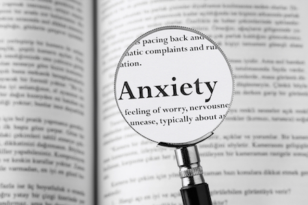

Mental Health Awareness
Anxiety Disorders

To understand anxiety disorders, it is important to first understand anxiety.
Anxiety is a future-oriented state characterized by a negative affect in which
a person focuses on the possibility of uncontrollable danger or misfortune.
These are some of the different anxiety disorders and descriptions and symptoms
of them:
Generalized Anxiety Disorder
Diagnostic Criteria for Generalized Anxiety Disorder
- Excessive anxiety and worry occuring more days than not for at least six months
- Difficulty controlling the worry
- Anxiety and worry associated with other physical symptoms
- Anxiety is causing clincially significant distress or impairment
- Anxiety is not due to substance use or medical condition
- Not better explained by another mental disorder
Social Anxiety Disorder
Diagnostic Criteria for Social Anxiety Disorder
- Extreme and persistant fear and anxiety about being judged by others
- Sometimes (not always) manifests as shyness
- Leads to significant impairment and/ or distress
- Avoidance of feared situations, or endurance with extreme distress
Panic Disorder
- Recurrent unexpected panic attacks
- At least one attack has followed by significant worry or maladaptive change in behavior
- Not explained by substance use
- Not better explained by another mental disorder
Mood Disorders
Eating Disorders
Psychotic Disorders
Personality Disorders
Trauma and Stressor-Related Disorders
Substance Related Disorders
Neurodevelopmental Disorders